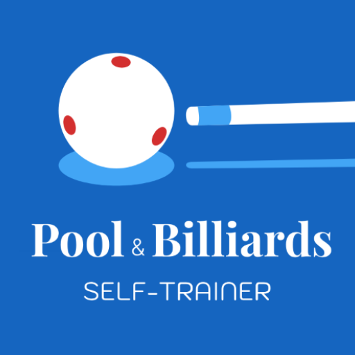
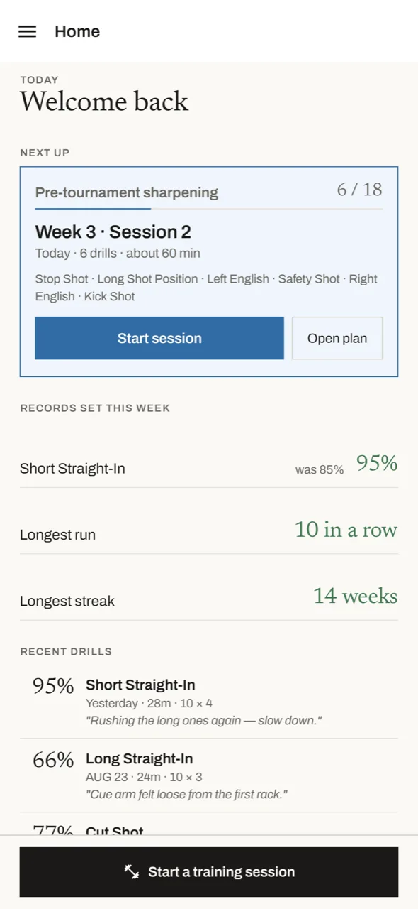
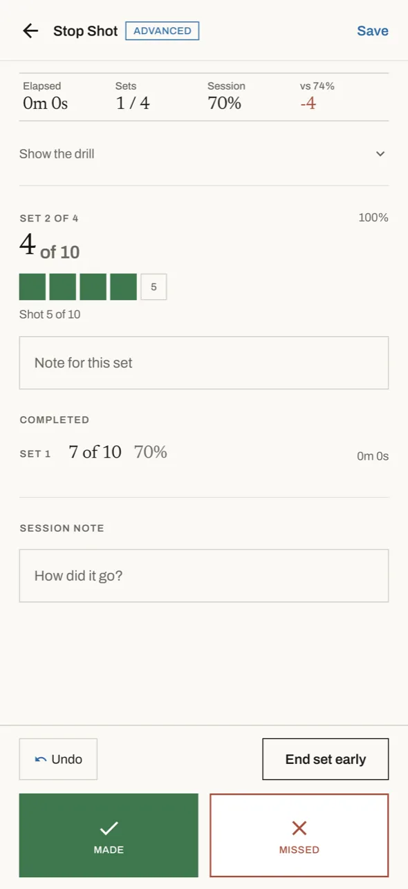
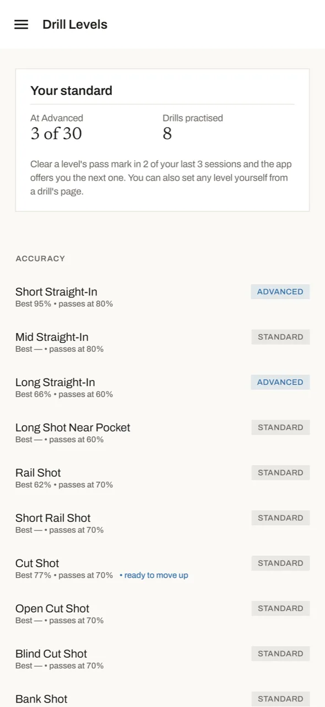
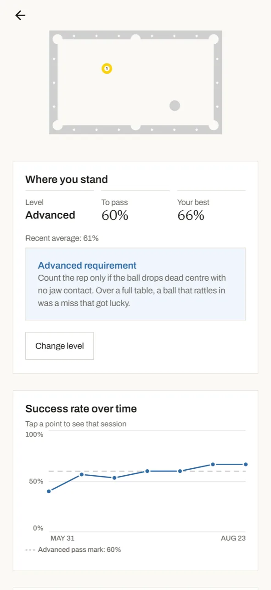
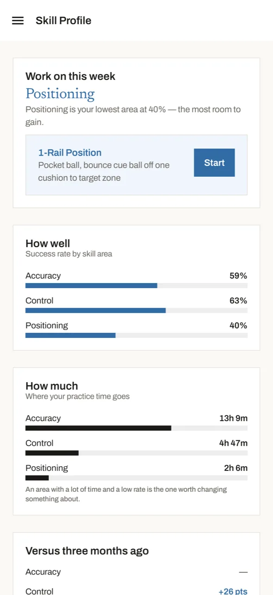
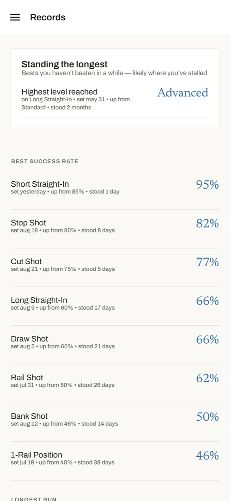
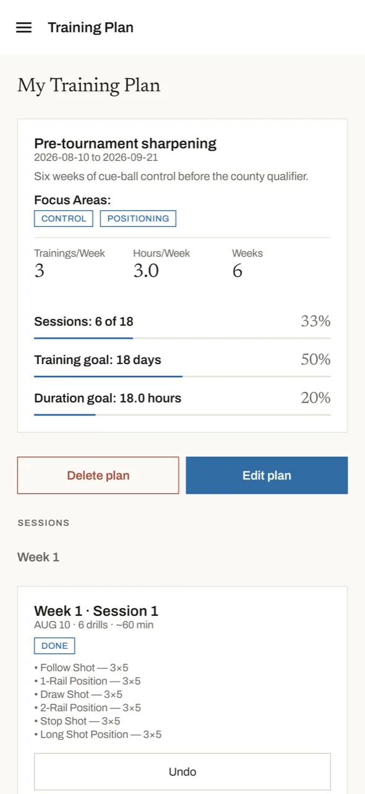
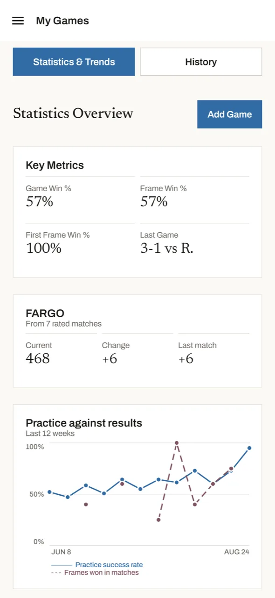

Para quem treina sozinho
A aplicação de treino de bilhar para quem joga sozinho.
Duas horas à mesa sozinho podem parecer produtivas e não mudar nada. A Pool & Billiards Self-Trainer dá a cada sessão de treino um propósito, uma pontuação e um registo a que pode voltar — exercícios guiados, testes de auto-avaliação, planos de treino e registo de partidas para bola 8, bola 9 e snooker.
Sem conta. Sem início de sessão. O seu histórico de treino fica no seu dispositivo.

Como é a aplicação
Oito ecrãs da aplicação, pela ordem em que uma sessão de treino acontece.








Ecrãs em iPhone. No Android é a mesma aplicação.
O que vai ter
Uma biblioteca de exercícios que explica porquê
Cada exercício traz um esquema de posicionamento, a competência trabalhada — precisão, controlo da bola branca, posicionamento —, um grau de dificuldade e uma explicação do que corrige no seu jogo.
Sessões de treino guiadas
Sessões prontas de 5 a 60 minutos. A aplicação conduz exercício a exercício, com pausas cronometradas, para nunca ficar à beira da mesa a decidir o que vem a seguir.
Testes de auto-avaliação
Testes normalizados e repetíveis. Faça um hoje, faça o mesmo daqui a um mês e veja a diferença num número em vez de numa sensação.
Planos de treino semanais
Defina o que quer trabalhar esta semana e com que frequência. O ecrã principal diz-lhe o que está previsto para hoje.
Registo de partidas
Registe jogos a sério e veja se as competências que tem treinado aparecem quando conta.
Provas, não impressões
Taxas de sucesso por exercício, tempo dedicado a cada área e tendências ao longo de semanas — para distinguir progresso de um bom dia.
Como funciona
- Diga onde está. Nível de jogo, aquilo que mais o frustra e quanto tempo tem hoje.
- Treine o que a aplicação propõe. Uma sessão guiada, ou escolha um exercício e defina as suas repetições e séries.
- Pontue cada série à medida que joga. Encaixada ou falhada, série a série — uns toques entre jogos.
- Teste-se periodicamente. Os testes dão-lhe uma referência estável que uma única sessão não consegue dar.
- Leia a tendência. Semanas de registos transformam-se numa resposta clara: isto está a resultar?
Guias de treino de bilhar
Textos práticos sobre treinar sozinho, para jogadores de bola 8, bola 9 e snooker.
Como treinar bilhar sozinho
Uma estrutura para o tempo à mesa a solo que produz melhorias mensuráveis.
Exercícios de bilhar para principiantes
Seis exercícios que constroem uma base, e como saber quando avançar.
Exercícios de controlo da bola branca
Bola parada, corrida, recuo e os exercícios de posicionamento progressivo que contam.
Construir um plano de treino
Como dividir uma semana de treino entre precisão, posicionamento e jogo.
Como medir a evolução
Que números seguem mesmo a competência e quais seguem apenas o seu humor.
Todos os guias →
O índice completo.
Perguntas frequentes
Como treinar bilhar sozinho sem desperdiçar a sessão?
Dê estrutura à sessão: escolha uma competência para trabalhar, faça um número reduzido de exercícios durante um número fixo de séries, pontue cada série à medida que joga e registe o resultado. A aplicação trata dessa estrutura por si e guarda o registo, para que possa comparar esta semana com a anterior. Há uma explicação mais longa em como treinar bilhar sozinho.
A aplicação funciona sem ligação à Internet?
Sim. Exercícios, sessões, testes e todo o seu histórico de treino funcionam sem ligação, e não há conta nem início de sessão. Os seus registos ficam no seu dispositivo — veja a política de privacidade.
Serve só para bola 8, ou também para bola 9 e snooker?
Os exercícios treinam as competências de base — precisão de encaixe, controlo da bola branca e posicionamento — pelo que se aplicam igualmente à bola 8, bola 9, bola 10 e ao snooker. O registo de partidas permite anotar qualquer modalidade que jogue.
Quanto tempo deve durar uma sessão de treino?
As sessões guiadas vão de 5 a 60 minutos. Uma sessão curta e pontuada vale mais do que uma longa e sem foco — é o registo que torna o progresso visível.
Como sei se estou mesmo a melhorar?
Faça um teste de auto-avaliação periodicamente. Por ser um teste normalizado e repetível, a pontuação de hoje é comparável com a de daqui a um mês — ao contrário da sensação deixada por uma única sessão. Mais sobre isto em como medir a evolução.
Em que dispositivos está disponível?
iPhone através da App Store e Android através do Google Play. Ambas as ligações estão abaixo.
Obter a aplicação
Disponível para iPhone e Android. A biblioteca completa de exercícios, os testes de auto-avaliação, os planos de treino e todo o seu histórico estão incluídos.
Funciona sem ligação. Não requer conta.